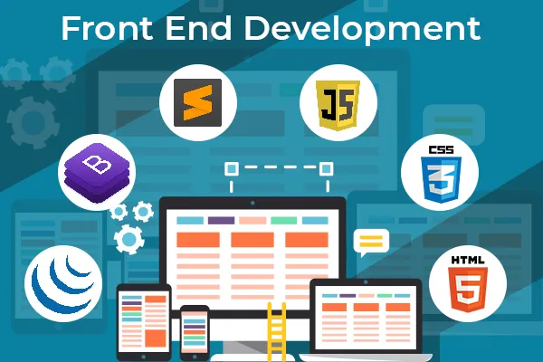

🧑â€ğŸ’» Perfil Profesional
Diseñador y desarrollador web con más de 4 años de experiencia creando interfaces modernas, responsivas y centradas en el usuario. Apasionado por el diseño UX/UI, desarrollo Front-End y rendimiento web.
ğŸ› ï¸ Especialización
- Front-End: HTML5, CSS3, JavaScript, Node, bootstrap y tailwind
- CMS: WordPress
- Herramientas: Git, GitHub, VS Code
🨠Portafolio
✅ Habilidades Técnicas
- HTML, CSS, JavaScript, Node, HTML5
- WordPress, SEO
- Git, GitHub
📱 Redes Sociales
📌 Experiencia
Actualmente en formación intensiva con proyectos reales. Desarrollo continuo de portafolio y mejora constante de habilidades técnicas y de diseño.